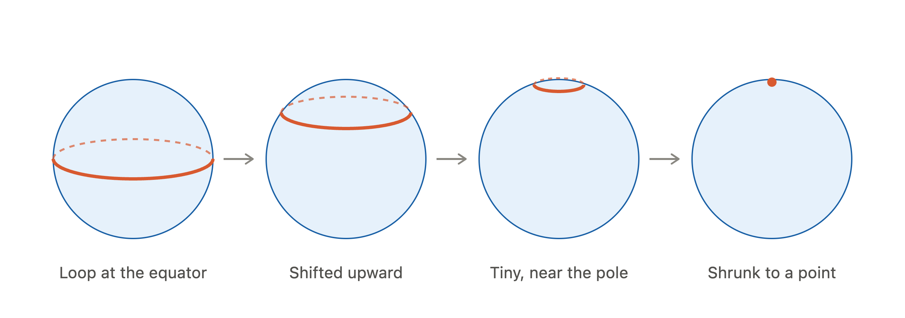
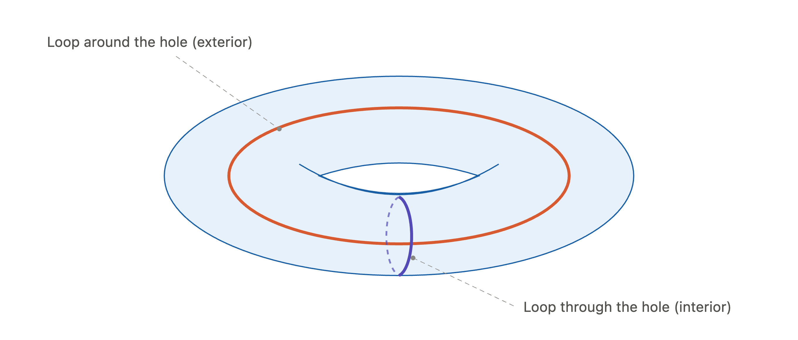

A peculiar interpretation of derivatives
The motivation for this article comes from William Thurston's superb essay On proof and progress in mathematics.
In this discussion I will explore deep and intricate connections from already hard mathematical concetps.
My goal is to provide the best possible intuition for those ideas to you.
In this context, I will refrain myself from using technical language and do my best to keep the discussion light and visual.
But, for sake of understanding I must introduce two important abstract concepts, that of differential forms and (co)homology.
Ok, so first, differential forms can be quite obscure objects. They were introduced to generalise the concept of gradient of a function onto arbitrary geometric objects of various dimensions such as loops, spheres, donuts, klein bottles, ..., or more generally what we call smooth manifolds of dimension \(n\).
Recall that the gradient is an operator \(\nabla\) that eats a function \(f\) (differentiable), a point \(p\) and outputs a vector.
PICTURE ?
Now, as one might expect, the gradient and the directional derivative are actually related, by the following equation: \(df_p(v) = \frac{\partial f}{\partial v}(p) = \nabla f(p) \cdot v \),
where \(v\) is a tangent vector at \(p\) and \(c\cdot\) is the dot product.
To summarise, the gradient of the function \(f\) can be understood as a vector field that assign to each point \(p\), the directional derivative of \(f\) at \(p\), \(\frac{\partial f}{\partial v} (p)\).
However, if we want to generalise such a notion to less trivial spaces, we are going to encounter a problem, namely, that the dot product is not defined in arbitrary vector spaces (this is quite complicated to imagine, but you have to believe me EXPLAIN A BIT MORE IF POSSIBLE) So what can we do now ? Let me introduce the twin of vector space: its dual (vector) space! Where an element of the dual space is a linear function that sends a vector to a scalar. Now we can interpret the gradient as a function that assigns to each point of a smooth space, an element of the dual of the tangent space at that point. That gives you the directional derivative when you give it v as input It is worth pausing here and rereading the previous sentences.
Theses functions from the smooth space to dual elements of the tangent space are called differential forms. CONTINUE EXPLAINATION HERE !!!! So formally, Now, consider arbibtrary coordinates \(x,y,z,...\) that let us describe local regions of the manifold using Euclidean coordinates (this is quite standard in differential geometry). These are just funcions, that give us a point in the manifold. Therefore, we can take their gradients! We get the differential forms \(dx, dy, dz, ...\). Finally we can now understand \(df = (df/dx)dx + (df/dy)dy + (df/dz)dz+ ...\)
However, if we want to generalise such a notion to less trivial spaces, we are going to encounter a problem, namely, that the dot product is not defined in arbitrary vector spaces (this is quite complicated to imagine, but you have to believe me EXPLAIN A BIT MORE IF POSSIBLE) So what can we do now ? Let me introduce the twin of vector space: its dual (vector) space! Where an element of the dual space is a linear function that sends a vector to a scalar. Now we can interpret the gradient as a function that assigns to each point of a smooth space, an element of the dual of the tangent space at that point. That gives you the directional derivative when you give it v as input It is worth pausing here and rereading the previous sentences.
Theses functions from the smooth space to dual elements of the tangent space are called differential forms. CONTINUE EXPLAINATION HERE !!!! So formally, Now, consider arbibtrary coordinates \(x,y,z,...\) that let us describe local regions of the manifold using Euclidean coordinates (this is quite standard in differential geometry). These are just funcions, that give us a point in the manifold. Therefore, we can take their gradients! We get the differential forms \(dx, dy, dz, ...\). Finally we can now understand \(df = (df/dx)dx + (df/dy)dy + (df/dz)dz+ ...\)
Now that we know what differential forms are, let's attack the next subject:
What does (co)homology even mean (such a weird word right)?
First of all, there are two notions here, homology and cohomology. But they are actually two sides of the same coin and there exist many kinds of (co)homology, a little bit like there are mutiple currencies that use coins. Concretely homology is the study of holes in sufficiently nice topological spaces, it gives us a way to define what a hole is and it allows us to distinguish between different kidns of holes.
OK, so one way of understanding how we can have different kinds of holes and how it might get tricky to even give a general definition of a hole, is to look at the following examples;
Imagine you have a sphere, a hollow ball if you will. What we can do totest for the existence/abscence of holes on that sphere is to consider a loop on the surface of the sphere (like putting a rubber band arround a huge ping-pong ball) and move it arround.
If you assume that your rubber band is magic and that it can shrink until it becomes a point, then this will actually happen.
Without lifting the ruber band from the ping-poing ball, by sliding it to one part of the sphere, you can make it shrink to a single point ! (look at the picture)
This exactly means that the sphere does not have a \(1\)-dimensional hole.
Now in place of a sphere, consider a torus (or an inflated swim ring), and attach a rubber band to it. The situation here is a bit different, there is actually two ways in which you can fit a rubber band onto a torus; one is to just put your rubber band onto the "exterior" of the torus and the other one is to imagine that the inflatable swim ring was constructed with a rubber band on its "inside" part (do you get it from picture bellow?). And this is a completely different situation than the one we had with the sphere. For the torus, it is impossible to shrink either rubber bands into a single point without lifting and breaking them (you can try if you want!). This means that the torus has two \(1\)-dimensional holes. And this actually tells us a lot about the structure of the inflatable swim ring, it hints to us the fact that the torus has two circles in it (in mathematical formalism, we write \(\mathbb{T}\cong S^1 \times S^1 \)).
First of all, there are two notions here, homology and cohomology. But they are actually two sides of the same coin and there exist many kinds of (co)homology, a little bit like there are mutiple currencies that use coins. Concretely homology is the study of holes in sufficiently nice topological spaces, it gives us a way to define what a hole is and it allows us to distinguish between different kidns of holes.
OK, so one way of understanding how we can have different kinds of holes and how it might get tricky to even give a general definition of a hole, is to look at the following examples;
Imagine you have a sphere, a hollow ball if you will. What we can do to

Now in place of a sphere, consider a torus (or an inflated swim ring), and attach a rubber band to it. The situation here is a bit different, there is actually two ways in which you can fit a rubber band onto a torus; one is to just put your rubber band onto the "exterior" of the torus and the other one is to imagine that the inflatable swim ring was constructed with a rubber band on its "inside" part (do you get it from picture bellow?). And this is a completely different situation than the one we had with the sphere. For the torus, it is impossible to shrink either rubber bands into a single point without lifting and breaking them (you can try if you want!). This means that the torus has two \(1\)-dimensional holes. And this actually tells us a lot about the structure of the inflatable swim ring, it hints to us the fact that the torus has two circles in it (in mathematical formalism, we write \(\mathbb{T}\cong S^1 \times S^1 \)).

There is a way to describe this processus formally, the idea is to use chains , cycles and boundaries .
Suppose we have a (resonnable topological) space \(X\) (think of a ping-pong ball, an inflatable swim ring, spacetime! or whatever smooth space you like).
For what comes next, we need to define what a \(k\)-chains is.
A \(k\)-chain can be thought of as a pile of \(k\)-dimensional flabby arrows, that you can attach together (now what a \(4\)-dimensional arrow is, I leave your imagination do the work).
PICTURE
Let \(C_k(X)\) be the \(k\)-dimensional set whose elements are the \(k\)-chains.
Let \(\partial_i: C_i(X) \rightarrow C_{i-1}(X)\) be a rule sending an \(i\)-cell to its boundary.
Formally, we have the following sequence,
$$ \{0\text{-chains}\} \xleftarrow{\partial_0} \{1\text{-chains}\} \xleftarrow{\partial_1} \{2\text{-chains}\} \xleftarrow{\partial_2} \{3\text{-chains}\} \xleftarrow{\partial_3} ... $$
Let \(Z_i := \text{ker}(\partial_i)\) be the set of cycles (so \(i\)-chains whose endpoints meet) and \(B_i := \text{im}(d_{i+1})\) the set of boundaries.
Notice that an \(i+1\) boundary is also a \(i\)-cycle, so \(\text{im}(d_{i+1})\subset \text{ker}(d_i)\).
Finally we can define what the \(n\)-th homology group of \(X\) written \(H_n(X)\) is.
It is H_n(X) = \frac{Z_n}{B_n}. It is important noting that it is also a vector space and dim \(H_n(X)\) is exactlythe number of \(n\)-dimensional holes of the space \(X\).
It is H_n(X) = \frac{Z_n}{B_n}. It is important noting that it is also a vector space and dim \(H_n(X)\) is exactlythe number of \(n\)-dimensional holes of the space \(X\).
Now cohomolgy on the other hand asks questions about functions (this is usually how we think about objects dually).
Instead of asking what cycles does the space contain, we ask what functions/rules can be put on those cycles ??? -such that- that detect their topology???
So for example instead of defining a \(k\)-chain as above, we will have a \(k\)-cochain which is a function \(f:C_k(X) \rightarrow R\) (where \(R\) is some number set, usually a ring).
Something that happens when taking the duals is that we have to reverse the arrows. (this way of thinking comes from CATEGORY THEORY, and in the language of category theory, it translates to: the dual operator is actually a contravariant functor, as categories \(\{k\text{-chains} \cong \{k\text{-cochains}\}^{op} \}\) )
What I mean is that our coboundary operator \(\delta\) takes an \(i\)-cochain and sends it a an \(i+1\)-cochain.
What people often do in algebraic topology and category theory is draw diagrams. This is very useful when we want to visualise what we are talking about.
DIAGRAM HERE
We have thus defined cochains and a coboundary operator, so as above, we can now define the cohomology of a topological space:
And again we define the cohomology group as ...
Now, one of the currencies is the de Rham cohomology.
- Homology: what is a hole and how do we distinguish different kinds of holes
- differential forms and exterior derivatives (on manifolds)
- de Rham cohomology studies differential forms (calculus) to measure holes (locally, because globally it can fail) - closed forms: a form with zero derivative and exact forms: a form that's not the derivation of anything else And exact implies closed but the converse is not necessarily true
Do not forget to add examples, graphics are even better !